混合递归：为每个 token 学出各自的递归深度
Mixture-of-Recursions: Learning Dynamic Recursive Depths for Adaptive Token-Level Computation
GitHub star 为 2026-10-19 的快照。阅读状态、进度与收藏只保存在你的浏览器里。
逐节精读
这部分按论文的章节顺序，用本站自己的话把整篇论文从头讲一遍。本页的节号是本页自己的编号，每节开头的问题框里注明对应原文的哪一节。读懂某个概念需要的背景知识，会在第一次用到它之前单独讲清楚（青色框）。每个结论都尽量说出“因为什么、所以什么”。论文以 CC BY 4.0 许可发布，所以原图直接放在讲到它的地方，并说明这张图怎么看；原图没画到的地方，用本站的示意图补上。标“推算”的数字是本站根据论文数据算出来的，不是论文原话。每节末尾有英文原文的链接。
0 导读：这篇论文解决什么问题
大语言模型越大越强，但训练和部署也越贵。想省钱，常见的有两条路。第一条是少存参数：让好几层共用同一套权重（叫参数共享或层绑定），模型占的显存和通信量就小了。第二条是少做计算：让“容易”的 token 少算几层就交卷（叫自适应计算，典型做法是早退出），总的计算量就少了。这两条路过去基本各走各的：共享参数的模型通常对每个 token 一视同仁地算满，早退出的模型通常每层都有自己的权重。
这篇论文提出的 Mixture-of-Recursions（MoR）想把两条路放进同一个模型。模型中间是一叠共享的层（称为递归块），每个 token 最多可以反复穿过它 \(N_r\) 次；一个很小的路由器（router）在训练中学会为每个 token 决定它要穿过几次。因为层是共享的，要存的参数只有普通模型的大约 \(1/N_r\)；因为容易的 token 早早停下，训练和推理的计算都减少了；作者还让每一轮递归只缓存仍在计算的 token 的 KV，于是 KV 缓存也变小了。把“少参数、少计算、少 KV”放在一个结构里，是这篇论文的主要卖点。
先把结果的份量说清楚，后面每一节都会回到这一点。实验规模是 135M 到 1.7B 参数（按对应的普通模型计），全部在 FineWeb-Edu 上从零预训练。主表在相同的训练 FLOPs（\(16.5\times10^{18}\)）下比较：递归 2 次的 MoR 只有普通模型约一半的参数，验证集负对数似然（NLL）从 2.7824 降到 2.7511，6 项 few-shot 平均准确率从 42.3% 升到 43.1%。这是真实但很小的提升；同一张表里，递归 3 次、4 次的 MoR 在 NLL 上已经不如普通模型。论文标题级的“2.06 倍推理吞吐”，对应的是质量略差于普通模型的 MoR-4。所以读这一页时要一直问：这个比较里，什么是对齐的，什么不是。
读完这部分，你应该能回答这几个问题：
- 递归 Transformer 是怎么把参数降到约 \(1/N_r\) 的？四种参数共享方式有什么区别，为什么最后选 Middle-Cycle？前作 Relaxed Recursive Transformers 做到了哪一步？
- 路由器怎么决定每个 token 递归几次？“专家选择”和“token 选择”各有什么毛病？为什么说专家选择在推理时违反因果，又怎么补救？
- 一个 token 提前停下后，后面的 token 在更深的轮次里还要不要读它的 KV？两种 KV 策略各自省了什么、没省什么？
- “同样训练 FLOPs、参数更少、效果更好”是怎么算出来的？为什么 MoR 能多看 35%–50% 的训练 token？
- 2.06 倍吞吐是在什么设置下测出来的？
- 换成更公平的比较（每个预算下各自最好的模型、更大的规模），这些优势还剩多少？
1 引言：参数共享和自适应计算，为什么想合在一起
一个普通的 Transformer 有 \(L\) 层，每层都有自己的一套权重。层绑定的做法是让若干层共用同一套权重。最早系统地这么做的是 Universal Transformer（2018），它把同一个块反复使用（见本站的 Universal Transformers 精读）；ALBERT 也在所有层之间共享权重。这样做的好处是要存、要传的参数少了，显存和多卡通信的压力随之下降。代价是表达能力下降：在同样的深度下，共享参数的模型通常比不共享的模型差。
有一点特别容易被忽略：共享参数并不减少计算。一个展开后有 30 层的模型，即使只存了 10 层的权重，每个 token 也仍然要算满 30 层。参数省下来的是存储，不是算力。
早退出让模型在中间层就“交卷”：如果一个 token 在第 10 层时模型已经很有把握，就跳过后面的层，直接用这一层的表示去预测下一个 token。代表工作是 CALM（Schuster 等，NeurIPS 2022），本文的两位 Google DeepMind 作者 Tal Schuster 和 Adam Fisch 正是 CALM 的作者。
早退出在生成文字时有两个麻烦。第一是漏掉的 KV：一个 token 在第 10 层退出，第 11 层以后就没有为它算 key 和 value；后面的 token 在第 11 层以后做注意力时，要读前面所有 token 的 KV，这个 token 的那一份却不存在。第二是批处理里的空泡：推理时一批 token 一起逐层往上算，提前退出的 token 只能在深层空等，等同批里最慢的那个算完，它的位置才能让给新的 token。此外，早退出通常需要在主训练之后另加一个训练阶段，教中间层也能做预测，这一步常常让最后一层的质量下降。
作者的出发点是：递归 Transformer 天然适合早退出。因为每一轮用的都是同一套权重，一个 token 提前停下后，它在批里的位置可以马上交给另一个 token 的任意一轮计算（本页第 7 节的“连续深度批处理”会画出来），空泡问题有了解法。剩下要解决的是两件事：怎样在不加额外训练阶段的情况下让模型学会“该停就停”，以及停下的 token 留下的 KV 空缺怎么办。
MoR 的回答是：在预训练时就端到端地训练一个轻量的路由器，让它给每个 token 分配递归深度；KV 缓存按递归轮次分开存，每一轮只存真正参与这一轮计算的 token。作者把好处概括成三句话：绑定权重，减少参数；路由 token，减少冗余计算；按递归缓存 KV，减少显存读写。
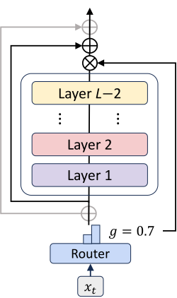
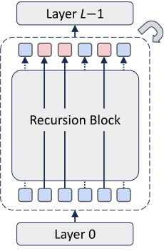
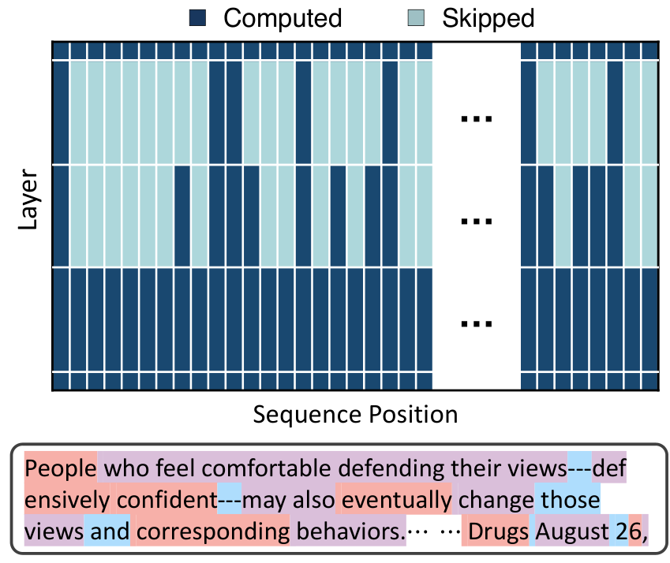
论文还把 MoR 说成一种“潜空间推理”的预训练框架：token 不必写出思考过程，而是在深度方向上多“想”几遍，而且想几遍因 token 而异。这个说法与Huginn、Reasoning with Latent Thoughts 等工作一脉相承。
2 预备知识：递归 Transformer、四种共享方式和前作 RRT
一个 token 进入模型后变成一个向量，叫隐藏状态 \(h\)。每一层做两件事：注意力（从前面的 token 那里取信息）和前馈网络（对自己的向量做变换），两者的结果都加回到 \(h\) 上，这叫残差连接。所以可以把一层写成
意思是：第 \(\ell\) 层用它自己的参数 \(\Phi_{\ell}\)，把位置 \(t\) 的状态往前推一步。普通模型有 \(L\) 套互不相同的 \(\Phi_{\ell}\)。
递归 Transformer 把这 \(L\) 层分成 \(N_r\) 个“递归块”，所有块共用同一池参数 \(\Phi'\)。展开以后，有效深度还是 \(L\) 层，所以每个 token 的计算量不变；但需要存的参数大约只剩 \(1/N_r\)。
2.1 四种共享方式：层按什么顺序复用
同样是“10 层权重用 3 遍”，排列顺序可以不同。论文比较了四种：
- Cycle（循环）：整块依次重复，展开后是 \((0,1,2),(0,1,2),(0,1,2)\)。第 \(\ell\) 层用的参数是 \(\Phi'_{\ell \bmod (L/N_r)}\)。
- Sequence（顺序）：每层连续用几次再换下一层，展开后是 \((0,0,0),(1,1,1),(2,2,2)\)。
- Middle-Cycle 和 Middle-Sequence：第一层和最后一层保留独立的参数 \(\Phi_0\) 和 \(\Phi_{L-1}\)，只让中间的层按 Cycle 或 Sequence 的方式共享。Middle-Cycle 中间第 \(\ell\) 层用的参数是 \(\Phi'_{((\ell-1)\bmod((L-2)/N_r))+1}\)。
为什么要把第一层和最后一层单独拿出来？直觉是这两层的分工很特殊：第一层要把词嵌入“读进来”，最后一层要把表示“写成”下一个 token 的概率分布，让它们和中间层共用权重，等于逼一套参数同时干三种不同的活。Huginn 的“前奏—循环块—尾声”结构也是同样的思路。第 8.1 节的消融会证明 Middle-Cycle 最好，所以论文里所有的 Recursive 基线和 MoR 都用它。
落到实际配置上，以 360M 的普通模型为例：它有 32 层、3.15 亿个非嵌入参数。改成 \(N_r=3\) 的 Middle-Cycle 以后是“1 + 10 + 1”：首尾各 1 层，中间 10 层循环 3 遍，展开后仍是 \(1+30+1=32\) 层，但只存 12 层权重，非嵌入参数降到 1.18 亿。层数不能被整除时，作者会加层凑整：135M 的普通模型有 30 层，递归版本加了 2 层，变成 \(1+10\times3+1=32\) 层，为此少训练几步来保持 FLOPs 预算不变。
2.2 前作：Relaxed Recursive Transformers（RRT）
MoR 的第一作者此前发表了 Relaxed Recursive Transformers（Bae 等，ICLR 2025），MoR 的很多设计都从这里来。RRT 做了三件事：
- 从已训练好的模型“改造”出递归模型。RRT 不从零训练，而是拿 Gemma 2B、TinyLlama 1.1B、Pythia 1B 这样的现成模型，只保留一块层，循环使用，再用少量数据继续训练（论文称为 uptraining）。共享层的初始值有三种取法：Stepwise（每隔几层挑一层）、Average（把要绑在一起的层取平均）、Lower（直接用最前面几层）。
- “放松”严格的共享。给每一轮循环里的每一层各加一个小的 LoRA 低秩修正，并用截断 SVD 初始化，让“共享权重 + 低秩修正”尽量还原原模型各层的权重。秩为 0 时就是严格的递归模型，秩足够大时就接近原模型。
- 提出连续深度批处理。因为每一轮用同一套权重，处在不同轮次的 token 可以放进同一个批里一起算；再配上早退出，RRT 在理论估算（模拟）中得出吞吐量可提高 2–3 倍。它的早退出是在 uptraining 之后另做的一个训练阶段，让中间轮次的输出也能做预测。
RRT 的主要结果是：由 Gemma 2B 改造出的递归 Gemma 1B，few-shot 表现超过同等大小的 TinyLlama 1.1B 和 Pythia 1B，比从零训练的非递归 Gemma 1B 最多高 13.5 个百分点。
2.3 递归结构带来的效率，以及前人留下的问题
论文指出递归结构还有两个“附送”的效率好处。第一个与分布式训练有关。FSDP（全分片数据并行）把每层的参数切成片分散在各张 GPU 上，算某一层之前要先做一次 all-gather，把这一层的完整参数拼回来。递归模型的共享块拼回来一次，可以连续用 \(N_r\) 轮，通信次数随之减少。不过论文只是提出了这一点，没有测量；官方仓库的维护者在 GitHub issue #13 里也表示这一点还需要实际验证。第二个好处是连续深度批处理，第 7 节详细讲。
前人的递归模型留下了三个问题，正是 MoR 要解决的：
- KV 缓存没有变小。参数虽然共享了，每一轮循环通常还是各存一份 KV。推理时读 KV 往往是瓶颈，所以光共享参数，推理并不会快多少。
- 所有 token 的递归次数相同。大多数递归模型对每个 token 都循环同样多次。早退出能带来一些灵活性，但它是事后加上去的，需要单独训练，还会掉点。理想的做法是在预训练时就学会因 token 而异的深度。
- 动态深度带来漏掉的 KV。如果训练时就让 token 在不同轮次退出，退出的 token 在更深的轮次里没有 KV，后面的 token 就查不到它。以前的补救办法（比如作者的 FREE 框架用的并行解码）需要相当复杂的工程。
3 路由：每个 token 递归几次由谁决定
MoE 层里有多个“专家”（通常是多个前馈网络），路由器给每个 token 对每个专家打一个分。接下来有两种分配办法（DeepSeek-V3 的路由可参考本站精读的 MoE 一节）：
- token 选择（token-choice）：每个 token 挑自己分数最高的专家。决定只依赖这个 token 自己，简单、天然满足因果；但专家之间的负载可能极不均衡，比如所有 token 都挤向同一个专家。通常要加一个负载均衡损失，或者用 DeepSeek 提出的“无辅助损失”做法——给每个专家加一个偏置，被挤爆的专家偏置调低（见负载均衡一节）。
- 专家选择（expert-choice）：反过来，每个专家从一批 token 里挑分数最高的 \(k\) 个。每个专家处理的 token 数固定，负载天然完全均衡；但一个 token 会不会被选中，取决于同一批里其他 token 的分数。
Mixture-of-Depths（MoD，Raposo 等，2024）把“这一层要不要算”变成一个路由问题：每层一个路由器，从序列中挑出分数最高的 top-\(k\) 个 token 走完整的这一层，其余 token 沿残差直接跳过。被选中的比例叫容量（capacity），事先固定，所以总计算量是静态的。MoR 的专家选择路由，就是把 MoD 搬到递归结构上，把“第 \(r\) 轮递归”当作一个专家。
3.1 专家选择路由：每一轮挑出一部分 token 继续
在第 \(r\) 轮，路由器读入 token \(t\) 进入这一轮之前的状态 \(\mathcal{H}^r_t\)，用自己的参数 \(\theta_r\) 算出一个标量分数 \(g^r_t=\mathcal{G}(\theta_r^{\top}\mathcal{H}^r_t)\)，其中 \(\mathcal{G}\) 是 sigmoid 或 tanh。然后只有分数排在前 \(k\) 名的 token 穿过递归块：
这里 \(f\) 是整个递归块（几层共享的 Transformer 层），\(P_{\beta}(G^r)\) 是这一轮所有分数的 \(\beta\) 分位数，也就是“前 \(k\) 名”的门槛。被选中的 token，递归块的输出乘上路由分数再加回原状态；没被选中的，状态原样往上传。乘上分数这一步很关键：路由分数因此出现在前向计算里，梯度可以传回路由器，路由器才学得动。
作者还加了一条层层筛选的规则：只有在第 \(r\) 轮被选中的 token，才有资格参加第 \(r+1\) 轮的评选。这样一来，一个 token 一旦落选就相当于“退出”了，行为和早退出一样，只是这个退出规则是从零开始训练出来的。
每一轮挑多少个？作者让专家选择的容量和“完全均衡的 token 选择”对齐，以便两种路由在同样计算量下比较。完全均衡时，每个 token 以相同概率 \(1/N_r\) 被分到深度 1、2、……、\(N_r\)，于是第 \(j\) 轮要处理的比例是 \((N_r-j+1)/N_r\)。\(N_r=3\) 时，三轮分别处理 100%、2/3、1/3 的 token。专家选择就照这个比例设定每轮的 top-\(k\)。
3.2 专家选择的毛病：训练时偷看了后面的 token
上面的示意图里，第 2 轮要从 6 个 token 里留 4 个。t3 的分数是 0.58，排在第 5，被它后面 t6 的 0.64 挤掉了。训练时整段文本一次性送进模型，这样挑没有任何困难；但模型生成文字时是一个 token 一个 token 往外吐的，生成 t3 的那一刻 t6 还不存在，按“前 \(k\) 名”的规则根本无法决定 t3 要不要进第 2 轮。
更深一层的问题是信息泄漏：训练时，位置 3 有没有被多算一轮，取决于后面 token 的分数，而这些分数又是从后面 token 的隐藏状态算出来的。模型因此有可能间接利用“未来”的信息，而推理时这条信息通道并不存在，训练和推理的行为就对不上了。这个问题在 MoE 的专家选择和 MoD 里都存在，并不是 MoR 独有的。
论文试了两种补救办法（附录 A.2）：
- 辅助路由器：另训一个小网络，只看 token 自己的状态，去预测“这个 token 会不会进前 \(k\) 名”。它用二元交叉熵训练，目标就是主路由器的选择结果；它的梯度被截断，不影响主模型。推理时扔掉主路由器，改用这个辅助路由器。
- 辅助损失：不另建网络，而是直接给主路由器加一个二元交叉熵损失，把前 \(k\) 名的分数推向 1、其余推向 0。训练好以后，主路由器的分数几乎是非 0 即 1 的，推理时只要看单个 token 的分数是否超过 0.5 就能决定它是否继续，不需要知道别的 token。
第 8.2 节的消融显示辅助损失更好，于是成为最终方案。官方仓库维护者在 GitHub issue #9 里确认：生成时就是按“分数大于 0.5 就继续”来路由的。论文用“采样准确率”衡量这种因果规则和训练时 top-\(k\) 规则的吻合程度：最终设计约为 99.3%（附录表 13），也就是每一轮里大约每 140 个 token 有 1 个的去留判断不一致（推算）。
3.3 token 选择路由：一开始就定好轮数
token 选择反过来：在第一轮之前，路由器只看 token 自己的状态 \(\mathcal{H}^1_t\)（用 Middle-Cycle 时就是第一层的输出），对 \(N_r\) 个“专家”打分，取最高的一个（top-1）。被分给专家 \(i\) 的意思是：这个 token 要连续穿过递归块 \(i\) 次。跑满 \(i\) 次以后，最终输出乘上路由分数，再加回进入递归之前的状态 \(\mathcal{H}^1_t\)。
它的优点是天然因果：每个 token 只根据自己做决定，训练和推理完全一致。缺点是负载不均衡：路由器可能把大多数 token 都派到最深的一档（算力没省下来），也可能都派到最浅的一档（模型变弱）。作者用了两种 MoE 里常见的办法来拉平负载：
\(f_i\) 是实际被分给专家 \(i\) 的 token 比例（乘了 \(N_r\)，完全均衡时等于 1），\(P_i\) 是路由器给专家 \(i\) 的平均分。两者的乘积在某个专家“又被选得多、分数又给得高”时最大，所以最小化这个损失会把 token 往冷门的专家推。另一种是“无辅助损失”做法：每个专家带一个偏置 \(b_i\)，每个训练批次统计各专家拿到的 token 数，超载的专家把偏置调低 \(u\)，欠载的调高 \(u\)；偏置只影响“选谁”，不影响乘在输出上的分数。衡量均衡程度的指标叫 MaxVio：最忙的专家比平均负载多出的比例，0 表示完全均衡。
在 MoR 里，均衡比在普通 MoE 里更难。普通 MoE 的专家彼此对称，而这里的“专家”是不对称的：深度 3 的代价是深度 1 的三倍，而且分到深度 3 的 token 必须先经过第 1、2 轮。论文报告，即使加了均衡损失，模型在将近一半的训练步里都没有达到均衡。
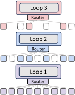
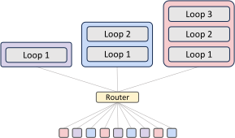
| 专家选择 | token 选择 | |
|---|---|---|
| 优点 | 每轮处理的 token 数固定，计算量静态、负载完全均衡 | 只看自己，没有信息泄漏，训练与推理一致 |
| 缺点 | top-\(k\) 依赖同批其他 token，违反因果 | 负载不均衡，深浅档挤兑 |
| 补救 | 辅助路由器，或辅助损失（最终选后者） | 均衡损失，或无辅助损失的偏置法 |
对应原文表 2 左半部分，本站用中文重写。
- 这里的“专家”不是 MoE 里那种各自独立的前馈网络。所有“专家”共用同一套递归块参数，“专家 \(r\)”只是“第 \(r\) 轮”的代号。MoR 没有增加任何专家参数，路由器本身也只是一个线性层（最终设计）。
- 专家选择的容量在训练时是固定的：每段 2K 长的文本里，恰好 1/3 的 token 进入第 3 轮。模型不能决定“这篇文章整体很难，多算一点”。论文在局限性里也承认，由于辅助损失让路由分数几乎非 0 即 1，训练好以后很难再通过调 top-\(k\) 来在速度和质量之间换挡。
4 KV 缓存：提前停下的 token，后面的 token 还看得见吗
生成文字时，每生成一个新 token，每一层都要用它的 query 去和前面所有 token 的 key 做比较，再按权重把 value 加起来。前面 token 的 key 和 value 在之前的步骤里已经算过，所以存起来复用，这就是 KV 缓存（详见本站 vLLM 精读的 2.2 节）。它的大小正比于“层数 × token 数”。生成阶段每一步的计算量很小，却要把参数和整份 KV 缓存从显存里读一遍，所以速度主要被显存带宽卡住：KV 越大，读得越久；KV 越大，一张卡上能同时服务的请求也越少。
动态深度的模型都会遇到 KV 一致性的问题：一个 token 提前退出后，它在更深层的 KV 就是缺的，而这些 KV 对后面的 token 可能很重要。以前有人用“过期的”浅层状态顶替（CALM），也有人用并行解码把缺的 KV 补算出来（FREE），但这些办法都增加了开销和复杂度。MoR 设计了两种更简单的策略。
4.1 两种策略
按递归缓存（recursion-wise KV caching）：受 MoD 启发，只有被路由到第 \(r\) 轮的 token，才在第 \(r\) 轮存自己的 KV；第 \(r\) 轮的注意力也只在这些 token 之间做。换句话说，每一轮都是一个“小圈子”：停下的 token 在更深的轮次里干脆不存在，后面的 token 也不去读它。这样，每一轮 KV 缓存的大小正好等于这一轮的容量（专家选择），或者等于实际分到这一轮的 token 数（token 选择）。
递归 KV 共享（recursive KV sharing）：MoR 的一个设计是所有 token 至少要跑完第 1 轮。利用这一点，只在第 1 轮缓存所有 token 的 KV，之后的每一轮都复用它。于是越往后，查询（query）越来越少，但键和值始终覆盖完整的序列。好处是每个 token 在每一轮都能看到全部上文，不需要任何补算；代价是第 2、3 轮看到的是第 1 轮的表示，和这一轮实际的表示存在分布上的错位。
4.2 走一遍例子：省了什么，没省什么
先看存多少 KV。普通递归模型每一轮都给 6 个 token 各存一份，3 轮共 18 份。按递归缓存只给参与这一轮的 token 存：6 + 4 + 2 = 12 份，是 18 的 2/3。递归共享只在第 1 轮存 6 份，是 18 的 1/3。
再看注意力要算多少个“查询—键”对。普通递归模型每轮有 6 × 7 ÷ 2 = 21 对（因果掩码下的下三角），3 轮共 63 对。按递归缓存时，第 2 轮只在 4 个活跃 token 之间算，有 10 对；第 3 轮只在 2 个之间算，有 3 对；合计 34 对。递归共享时，第 2 轮的 4 个查询要读到全部上文：t1 读 1 个、t4 读 4 个、t5 读 5 个、t6 读 6 个，共 16 对；第 3 轮 t1 和 t5 共 6 对；合计 43 对。
最后看生成时每一步要读多少 KV，这决定了解码速度。假设新来一个 token 要跑满 3 轮。按递归缓存，它在第 1 轮读 6 份、第 2 轮读 4 份、第 3 轮读 2 份，共 12 份；递归共享虽然只存了 6 份，但它在每一轮都要把这 6 份完整读一遍，3 轮共 18 份，和普通模型一样多。这就是共享策略的软肋：存储省了，读写没省。
把这个例子推广到一般情况，就得到论文表 2 右半部分的公式（只比较递归块，不算首尾两层；\(k\) 是某一轮的活跃 token 数，\(N_{\text{ctx}}\) 是序列长度）：
| 相对普通模型（= 1） | 按递归缓存 | 递归 KV 共享 |
|---|---|---|
| KV 显存（全模型） | \((N_r+1)/2N_r\) | \(1/N_r\) |
| KV 读写量（全模型） | \((N_r+1)/2N_r\) | 1 |
| 注意力 FLOPs（每层） | \((k/N_{\text{ctx}})^2\) | \(k/N_{\text{ctx}}\) |
第一行的 \((N_r+1)/2N_r\) 是这样来的：各轮容量依次是 \(N_r/N_r,\dots,1/N_r\)，取平均就是 \(\frac{1}{N_r}\sum_{r=1}^{N_r}\frac{N_r-r+1}{N_r}=\frac{N_r+1}{2N_r}\)。\(N_r=3\) 时是 2/3，和例子一致。注意力那一行是平方对线性的区别：按递归缓存时查询和键都只剩 \(k\) 个，所以按 \((k/N_{\text{ctx}})^2\) 缩小，第 3 轮（\(k/N_{\text{ctx}}=1/3\)）只剩 1/9；共享时键还是全长，只按 \(k/N_{\text{ctx}}\) 缩小。
换成一个真实的尺寸感受一下（推算）。360M 的普通模型有 32 层，每层 5 个 KV 头、每头 64 维；按 bf16（每个数 2 字节）算，每个 token 每层的 KV 是 2 × 5 × 64 × 2 = 1,280 字节，32 层合计 40 KB，一条 2K token 的序列约 80 MB。换成 \(N_r=3\) 的 MoR（1 + 10×3 + 1）后：按递归缓存时，首尾 2 层照常存，中间 10 层的三轮合起来相当于 10 × (1 + 2/3 + 1/3) = 20 层，共 22/32 ≈ 69%，约 27.5 KB/token；递归共享时，中间只存第 1 轮的 10 层，共 12/32 ≈ 38%，约 15 KB/token。这个 69% 和第 7 节吞吐实验里 MoR-3 能开大的批（48 对 32，即 1.5 倍，其中还包含参数变少省下的显存）大致对得上。
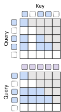
递归共享还有一个额外的潜在好处：如果用的是 Cycle 方式共享，处理长提示词（prefill）时只需要跑第一轮就能得到所有 KV，后面的轮次可以省掉 KV 投影甚至整个 prefill，这和 YOCO（Sun 等，2024）“只缓存一次”的思路类似。论文说这对上百万 token 的提示词可能带来很大加速，但没有做实验。
- “按递归缓存”不是把缺的 KV 补上了，而是改变了模型：第 3 轮的 token 本来就只看得见第 3 轮的同伴。这个限制在训练时就存在，所以训练和推理一致，但它意味着深层的注意力只能看到稀疏的一部分上文。
- 表 2 里的比例只针对递归块。首尾两层不共享、所有 token 都过，所以全模型的实际比例要略高一些（上面算出的 69% 而不是 67%）。
- 递归共享省的是显存，不是带宽。如果解码瓶颈是读 KV 的带宽，共享不会让每一步变快；它的价值在于显存装得下更大的批或更长的上下文。
5 主结果：同样训练 FLOPs，参数更少，效果略好
NLL（负对数似然）是模型给“正确的下一个 token”的概率取负对数后，在验证集上的平均值，越低越好。它的指数就是困惑度：NLL 2.78 对应困惑度 \(e^{2.78}\approx16\)，可以粗略理解为“模型平均在 16 个候选里犹豫”。NLL 差 0.03，困惑度大约差 3%。
六个 few-shot 任务是 LAMBADA（LD，猜一段话的最后一个词）、HellaSwag（HS，四选一续写）、PIQA（PQ，二选一的物理常识）、WinoGrande（WG，二选一的指代）、ARC（Easy 和 Challenge 的平均，多为四选一的科学题）和 MMLU（四选一的知识题，这里用“续写”格式评测）。随机猜的水平很重要：WG 和 PIQA 是 50%，HS、ARC、MMLU 大约是 25%。在几亿参数、几百亿 token 的规模上，WG 和 MMLU 通常还贴着随机水平。
论文按 Kaplan 等（2020）的近似来数：线性层的前向计算按“2 × 参数量”每 token 计；注意力只算 \(QK^\top\) 和乘 \(V\) 两步，而且只算因果掩码下有效的那一半；FlashAttention、归一化、激活函数的开销都不计。论文只数前向 FLOPs（反向大约是前向的两倍，各模型同比例，不影响比较），所以“\(16.5\times10^{18}\)”指的是前向计算，按惯例折合成完整训练大约是它的 3 倍（推算）。对 MoR，每一轮只按实际参与的 token 数计；token 选择因为每步分配都在变，按完全均衡来近似。
实验设置。模型是 Llama 结构，配置参照开源的 SmolLM 系列（135M、360M、730M、1.7B 四档，词表 49K，上下文 2K）。数据是 SmolLM-Corpus 里去重后的 FineWeb-Edu（约 2,200 亿 token 的教育类网页）。训练用 4 张 H100 或 A100。主实验和 isoFLOP 实验用“梯形”学习率（预热约 5%、平台、最后 20% 降温），其余实验用余弦退火。主表（表 3）全部基于 360M 档：普通模型 32 层、3.15 亿非嵌入参数。
| 模型 | 路由 / KV | \(N_r\) | 非嵌入参数 | 训练 FLOPs（×10¹⁸） | 训练 token | NLL ↓ | few-shot 平均 ↑ |
|---|---|---|---|---|---|---|---|
| Vanilla | — | — | 315M | 16.5 | 20B | 2.7824 | 42.3 |
| Recursive | — | 2 | 167M | 16.5 | 20B | 2.8079 | 42.6 |
| Recursive | — | 3 | 118M | 16.5 | 20B | 2.8466 | 41.5 |
| Recursive | — | 4 | 98M | 16.5 | 19B | 2.8781 | 41.0 |
| MoR | 专家 / 按递归缓存 | 2 | 167M | 16.5 | 27B | 2.7511 | 43.1 |
| MoR | 专家 / 按递归缓存 | 3 | 118M | 16.5 | 30B | 2.7925 | 42.6 |
| MoR | 专家 / 按递归缓存 | 4 | 98M | 16.5 | 30B | 2.8204 | 41.6 |
| MoR（同 token） | 专家 / 按递归缓存 | 2 | 167M | 12.3 | 20B | 2.7749 | 42.9 |
| MoR（同 token） | 专家 / 按递归缓存 | 3 | 118M | 11.0 | 20B | 2.8246 | 41.8 |
| MoR（同 token） | 专家 / 按递归缓存 | 4 | 98M | 11.0 | 20B | 2.8519 | 41.5 |
| MoR | token / 按递归缓存 | 3 | 118M | 16.5 | 30B | 2.9163 | 40.0 |
| MoR | 专家 / 递归共享 | 3 | 118M | 16.5 | 31B | 2.7983 | 41.9 |
数字全部来自原文表 3（360M 档，FineWeb-Edu）。Recursive 和 MoR 都用 Middle-Cycle 共享。完整的六项分数见原文。
5.1 为什么同一笔算力，MoR 能多看这么多 token
普通模型和 Recursive 都是每个 token 算满 32 层，所以 \(16.5\times10^{18}\) 只够它们看 20B token。MoR 让一部分 token 少跑几轮，平均每个 token 的计算量下降了，同一笔预算就能多看 token。下面按“线性层计算 ∝ 实际经过的层数”粗算一遍：
5.2 三组比较，分别说明了什么
第一组：同训练 FLOPs。递归 2 次的 MoR 只有 1.67 亿参数（普通模型的 53%），NLL 从 2.7824 降到 2.7511（困惑度从约 16.2 降到约 15.7，低约 3%，推算），few-shot 平均从 42.3% 升到 43.1%。论文把原因归结为 MoR 计算效率高、同样预算下多看了 7B token。递归 3 次和 4 次时，MoR 的参数更少（1.18 亿、0.98 亿），few-shot 平均仍在普通模型的 ±0.7 个百分点以内（42.6%、41.6%），但 NLL 分别是 2.7925 和 2.8204，已经比普通模型差。在每一个 \(N_r\) 上，MoR 都明显好于同样 \(N_r\) 的固定深度 Recursive（NLL 低 0.05–0.06）。
第二组：同训练 token（20B）。这组比较让数据量相同，以便单看结构的差别。MoR-2 只用了 \(12.3\times10^{18}\) FLOPs（比普通模型少 25%），NLL 2.7749，仍略好于普通模型的 2.7824，few-shot 42.9%。论文说实际训练时间少 19%、峰值显存少 25%；官方仓库维护者在 issue #3 里给出的原始数字是普通模型 115 小时、每卡 74 GiB，MoR-2 93 小时、每卡 55 GiB。FLOPs 省了 25%，时间只省了 19%，说明按 token 挑选、收集、散回这些操作有额外开销（推算）。MoR-3、MoR-4 在同 token 下 NLL 都比普通模型差（2.8246、2.8519）。
第三组：MoR 内部的变体（\(N_r=3\)）。换成 token 选择路由，NLL 从 2.7925 恶化到 2.9163，few-shot 从 42.6% 掉到 40.0%，差距很大；作者认为路由的粒度（每轮重新挑 vs 一开始定死）对效果至关重要。换成递归 KV 共享，NLL 2.7983、few-shot 41.9%，比按递归缓存略差，但换来了更小的 KV。
- WinoGrande 是二选一，表 3 所有模型的 WG 都在 50.5%–52.6% 之间，几乎就是随机猜；MMLU 是四选一，所有模型都在 26.8%–28.1% 之间，也贴着 25% 的随机线。这两项占了六项平均的三分之一，它们之间的差别基本是噪声。
- 一个旁证：Recursive-2 的 NLL（2.8079）明显比普通模型（2.7824）差，few-shot 平均（42.6%）却比普通模型（42.3%）高。可见在这个规模上，平均准确率 1 个百分点以内的差别不能说明谁更好，NLL 更可靠。
- 所有结果都是单次运行，没有报告不同随机种子的波动。
6 isoFLOP 分析：换四个规模、三个预算再比一次
固定一笔训练算力 \(C\)，模型越大，每个 token 越贵，能训练的 token 就越少（大致 \(D\propto C/N\)）。于是同一笔算力下，太小的模型“吃撑了”（数据多、容量不够），太大的模型“没吃饱”（容量大、数据不够），损失随模型大小画出来是一条 U 形曲线，U 的底部就是这笔算力下的计算最优模型。Chinchilla 的经验是，计算最优时每个参数大约对应 20 个训练 token。
由此可以得出一个读 isoFLOP 实验的要点：在固定预算下，如果拿来对比的普通模型远远没吃饱，那么任何“每个 token 更便宜”的结构都会显得更好，因为它同样的钱能多喂数据。这不一定说明结构本身更强。
实验设置。四个规模（135M、360M、730M、1.7B，均按普通模型计），Recursive 和 MoR 都固定 \(N_r=3\)，所以唯一参数大约是普通模型的 1/3 到 2/5；三个预算是 \(2\times10^{18}\)、\(5\times10^{18}\)、\(16.5\times10^{18}\)。MoR 用专家选择路由和按递归缓存。为了省算力，每个结构只按最大预算训练一次：梯形学习率的平台阶段会保存中间检查点，从相应的检查点开始做 20% 的降温，就得到小预算的结果。所以三个预算的结果不是三次独立训练。
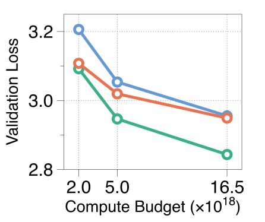
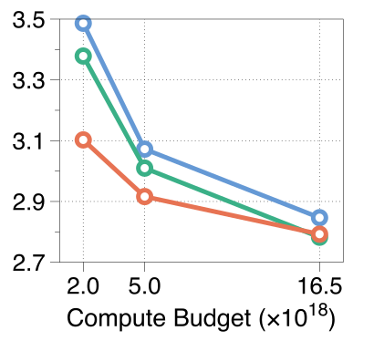
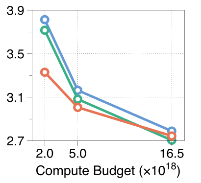
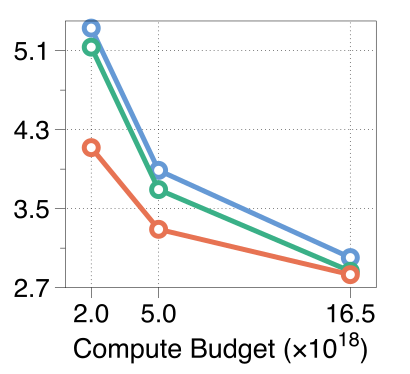
论文对这张图的解读是：MoR 在所有规模和预算上都胜过 Recursive；在最小的 135M 上不如普通模型，作者推测是递归结构的容量瓶颈；但从 360M 往上，MoR 不仅追平，而且常常超过普通模型，尤其在低和中等预算下。
把附录表 9 的原始数字直接相减，可以看得更清楚：
这张表读出三件事。
- MoR 对 Recursive 是 12 战 12 胜。在同样的 \(N_r\) 和同样的预算下，加了路由的 MoR 总比固定深度的 Recursive 好，差距从 0.006 到 1.21 不等。这一条结论是稳的。
- MoR 对普通模型的胜负，几乎完全由“普通模型吃没吃饱”决定。MoR 赢得最多的格子，都是普通模型严重缺数据的地方：1.7B 在 \(2\times10^{18}\) 下只训练了 0.6B token，每个参数不到 0.4 个 token，NLL 高达 5.13。反过来，普通模型数据充足的地方（135M 的三个预算，每参数 61–503 个 token；360M、730M 的最大预算），MoR 都输，而且 135M 上差距随预算增大而扩大（+0.016 → +0.073 → +0.106）。原因就在背景框里说的：MoR 每个 token 只花约 69% 的计算，同样预算多看约 50% 的 token，这在数据是瓶颈时是巨大的优势；数据不再是瓶颈时，参数只有 1/3 的容量劣势就显露出来。
- 按“每个预算下各自最好的模型”比，MoR 三局一胜。真正部署时，人们会在给定预算下挑最合适的模型大小，所以更公平的比较是每一列的最低 NLL。\(2\times10^{18}\) 时普通模型最好（3.092 对 3.103），\(5\times10^{18}\) 时 MoR 最好（2.916 对 2.946），\(16.5\times10^{18}\) 时又是普通模型最好（2.705 对 2.744）。只有四个规模的网格很粗，真正的最优点可能落在格点之间，但至少在最大的预算上，最好的普通模型明显好于最好的 MoR。
7 推理吞吐：连续深度批处理与 2.06 倍
推理服务把多个请求放进一个批里一起算，读一遍参数就能为多个请求各生成一个 token，所以批越大吞吐量越高。Orca 和 vLLM 采用的“连续批处理”（按迭代成批）让请求每一步都可以加入或离开：一个请求生成完就立刻让出位置，新请求下一步就能补进来，不必等整批结束（详见本站 vLLM 精读的 2.3 节）。论文把这叫做“连续按序列批处理”。
连续深度批处理是 RRT 提出、MoR 沿用的推理方式，它在“序列”之外又多了一个维度：深度。普通模型的各层权重不同，一批 token 只能整齐地一层一层往上走；如果其中某个 token 提前退出，它在更深的层里只能空等，直到整批走完最后一层，新的 token 才能从第一层进来。递归模型的每一轮用的是同一套权重，所以“A 的第 3 轮”和“D 的第 1 轮”可以放在同一次前向计算里一起算。一个 token 一停下，队列里的下一个 token 立刻补上它的位置，批始终是满的。
MoR 的实际系统还要处理不共享的部分：一个 token 跑完它的递归以后，还要经过最后一层、输出层，生成的新 token 再经过词嵌入和第一层，才能重新排进递归块的队列。作者的做法是把退出的 token 攒到一个最大批，再一起过这些不共享的层，然后按先进先出的顺序重新排队。
测量设置。模型是第 5 节那三个 360M 档的 MoR（\(N_r=\)2、3、4，用 \(16.5\times10^{18}\) FLOPs 训练），测的是解码吞吐。每个样本生成的 token 数从均值 256 的正态分布里抽，没有输入提示词，从空前缀开始生成；队列里共 1K 个 FineWeb-Edu 验证集样本。对照的普通模型使用连续按序列批处理。MoR-4 因为加了 2 层，对照的是一个同样 34 层的普通模型。批大小有两种设定：固定为 32；或者“相对最大批”——按参数和 KV 占用估算两种模型在 H100 上的最大批，用两者之比乘以 32，得到 MoR-2、MoR-3、MoR-4 分别可开到 42、48、51。实现上用了支持变长 KV 的 FlashAttention-2、静态 KV 缓存和 torch.compile，测量前先预热 100 步。作者明确说明：缓存和更新 KV 的时间没有计入，留待以后用更好的工程实现来精确比较。
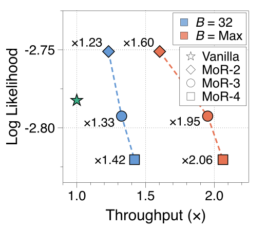
| 模型 | 吞吐（批 = 32） | 吞吐（相对最大批） | 最大批 | NLL（表 3） | 与普通模型比 |
|---|---|---|---|---|---|
| Vanilla | 1.00× | 1.00× | 32 | 2.7824 | — |
| MoR-2 | 1.23× | 1.60× | 42 | 2.7511 | 更快且更好 |
| MoR-3 | 1.33× | 1.95× | 48 | 2.7925 | 更快，NLL 差 0.010 |
| MoR-4 | 1.42× | 2.06× | 51 | 2.8204 | 更快，NLL 差 0.038 |
吞吐倍数读自原文图 4（a）的标注，最大批来自附录 E，NLL 来自表 3。
这些数字可以拆开来理解（推算）。固定批大小时，加速主要来自少算的层：MoR-3 平均每个 token 只算约 69% 的层，理想加速约 1.45 倍，实测 1.33 倍；MoR-2 理想约 1.31 倍，实测 1.23 倍。换成相对最大批时，再乘上批大小的比例：1.23 × 42/32 ≈ 1.61，1.33 × 48/32 ≈ 2.0，和图上的 1.60、1.95 很接近（MoR-4 按此估算会是 2.26，实测 2.06）。也就是说，“相对最大批”下的倍数，大约一半来自少算层，另一半来自 KV 和参数变小后能开更大的批。
- 2.06 倍属于 MoR-4，它的 NLL 比普通模型差 0.038，few-shot 平均低 0.7 个百分点。质量不输普通模型的只有 MoR-2，它的加速是 1.23 倍（固定批）或 1.60 倍（相对最大批）。
- “相对最大批”是按显存比例换算出来的：MoR 开 42–51，普通模型固定在 32。360M 的模型在 80GB 的 H100 上实际能开的批远大于 32，到那时解码可能不再是“批越大越快”的线性关系，倍数未必保持。
- 没有提示词、不计 KV 更新时间、只测了 360M 一个规模、只测了解码。这些都让测量偏向“理想情况”。
- 官方仓库只包含训练代码。维护者在 GitHub issue #9 和 #13 中说明，推理和连续深度批处理用的是另一套未整理的代码，尚未公开；截至 2026-10-19 仓库里仍没有推理代码，所以这个吞吐结果目前无法独立复现。
结果的份量：这些提升到底有多大
把前面三节放在一起，逐项称一称。
规模。主表是 360M 档（MoR 的唯一参数 0.98 亿到 1.67 亿），训练 19B–31B token；最大的实验是 1.7B 档。数据只有 FineWeb-Edu 一种，所有结果都是单次运行。
每个比较对齐了什么。MoR 的主比较是按训练 FLOPs 对齐的，这一点比很多循环模型论文更公平——后者常常拿“循环 L 次的小模型”和“参数相同的大模型”比，循环模型实际花了 L 倍的计算。但 MoR 的比较里参数和训练 token 都不对齐，读结论时要分清：
| 比较 | 训练 FLOPs | 唯一参数 | 训练 token | 每 token 计算 / KV | 结果 |
|---|---|---|---|---|---|
| 表 3，MoR-2 对 Vanilla（同 FLOPs） | 相同 | MoR 少 47% | MoR 多 35% | MoR 约 0.77×（推算） | NLL −0.031，few-shot +0.8 |
| 表 3，MoR-3 / MoR-4 对 Vanilla | 相同 | MoR 少 63% / 69% | MoR 多 50% | 约 0.69×（推算） | NLL +0.010 / +0.038 |
| 表 3，同 token | MoR 少 25%–33% | MoR 少 | 相同 20B | MoR 少 | MoR-2 略好，MoR-3/4 更差 |
| 图 3 / 表 9，isoFLOP | 相同 | MoR 约 1/3–2/5 | MoR 多约 50% | 约 0.69×（推算） | 取决于普通模型是否缺数据；按每列最好成绩三局一胜 |
| 附录表 8，同参数（118M）加深递归 | MoR 多 1.4–1.8 倍（推算） | 相同 | 相同 10B | MoR 多 | NLL 从 2.968 降到 2.921 / 2.911 |
| 附录表 7，1.7B（同 FLOPs） | 相同 | MoR 0.87B / 0.67B 对 1.61B | MoR 多 30%–35% | MoR 少 | few-shot：Vanilla 48.9，MoR 48.4 / 46.7 |
| 图 4（a），吞吐 | 同预算训练的模型 | MoR 少 | — | 相对最大批时 MoR 的批更大 | 1.23×–2.06×，越快的越差 |
提升有多小。最好的情况（MoR-2，同 FLOPs）是 NLL 低 0.031、困惑度低约 3%、few-shot 平均高 0.8 个百分点。few-shot 里 WinoGrande 和 MMLU 贴着随机水平，平均分 1 个百分点以内的差别不可靠。附录 C.1 的 1.7B 实验（\(68.5\times10^{18}\) FLOPs）里普通模型的 few-shot 平均是 48.9%，MoR-2 和 MoR-3 分别是 48.4% 和 46.7%；作者自己写道，这“也可能说明 MoR 当前的结构不适合扩展”。按每个预算下最好的模型比（第 6 节），在最大的预算上普通模型更好。综合来看，MoR 的稳定收益是用大约一半到三分之一的参数，达到和普通模型相近的质量，同时推理更快、KV 更小；它并没有在同等训练算力下给出明显更低的损失。
对照组。Vanilla 和 Recursive 都是作者用同一套代码、同一组超参数（配置文件里学习率都是 3e-3）自己训练的，这让比较在流程上是一致的，但没有为每种结构单独调参。论文没有和 Mixture-of-Depths 这类同样按 token 路由计算的方法做同算力对比，也没有和 RRT 那样的“递归 + LoRA 放松”在同设置下比较（附录表 16 只在 Recursive 上试了 LoRA 放松，从零训练时没有明显好处）。
评测路径。维护者在 issue #9 中说明，few-shot 评测只用了只需要 prefill 的任务，并且用训练代码评测；本站读公开代码看到，评测时专家选择仍是在整段序列上取 top-\(k\)，而不是生成时用的“分数大于 0.5”规则。由于两者在约 99.3% 的判断上一致（第 3 节），影响大概很小，但论文没有单独报告按因果规则评测的 NLL。
开放程度与独立验证。训练代码以 Apache-2.0 开源，360M 档主表模型的检查点放在 Google Drive 上；没有 Hugging Face 版本（维护者在 2026-09 的 issue #3 中说尚未整合）。2026-09 有用户在 issue #17 中发现，公开代码在整理时把专家选择版本里注意力层的权重共享弄丢了；维护者修复了代码，并说明已发布的检查点来自原始训练、共享是正确的。截至 2026-10-19，本站没有找到对 MoR 主结果的独立复现。
和本系列其他论文对照。Iso-Depth 在同训练算力下测得“多循环一次”只值一个独立块的 φ = 0.46（95% 置信区间 0.41–0.53）；SMELT 在每 token FLOPs、总参数和 KV 缓存全部对齐的 MoE 设置下，发现把中间一半的层循环两次，可在计算最优前沿上节省 6.8%–18.0% 的训练 FLOPs。这些结果和 MoR 的结论方向一致：循环（共享参数）主要换来的是参数效率，在严格对齐算力时，质量上的收益是有限的、要精打细算的。
英文原文 §3.3 ↗ · 附录 E（吞吐测量）↗ · 附录 C（1.7B 与同参数实验）↗ · GitHub issue #9 ↗
8 消融：共享方式、路由器设计、KV 策略
8.1 共享方式：Middle-Cycle 最稳
作者在固定深度的 Recursive 模型上比较四种共享方式，规模是 135M 和 360M，递归 2 次和 3 次，每个模型训练 10B token。
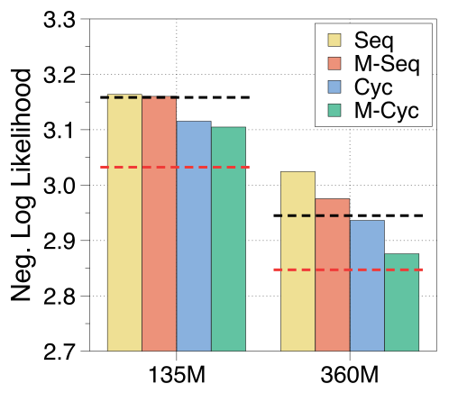
具体数字（附录表 10，360M，\(N_r=3\)）：Middle-Cycle 2.8760，Cycle 2.9363，Middle-Sequence 2.9753，Sequence 3.0245；完整普通模型 2.8471，10 层的小普通模型（参数相当）2.9449。135M 递归 2 次时 Cycle 略好于 Middle-Cycle（3.0071 对 3.0330），其余设置都是 Middle-Cycle 最好。在“从现成 SmolLM 检查点继续训练 5B token”的设置下（附录表 12），两种 Middle 方式也都最好。
8.2 路由器设计
消融在 360M 档、\(N_r=3\)、按递归缓存的 MoR 上进行（训练 10B token）。对专家选择，作者还引入一个指标叫死 token 比例：在验证集的一批样本里，有多少比例的序列位置在最后一轮从来没被选中过。比例高说明路由器有位置偏好，比如总是挑某几个固定位置，而不是按内容挑。
| 专家选择配置 | 死 token | NLL | few-shot |
|---|---|---|---|
| 辅助路由器，sigmoid，MLP | 0.0% | 2.8893 | 39.4 |
| 辅助路由器，tanh，MLP | 66.7% | 2.8720 | 36.2 |
| 辅助损失，sigmoid，MLP | 0.0% | 2.8816 | 40.0 |
| 辅助损失，tanh，MLP | 0.0% | 2.9933 | 38.8 |
| 辅助损失，sigmoid，线性 | 0.1% | 2.8667 | 40.1 |
| 辅助损失，sigmoid，宽 MLP | 0.4% | 2.8716 | 39.4 |
| 辅助损失，sigmoid，线性，加 z-loss | 0.0% | 2.8824 | 40.0 |
| 对照：随机路由 | 0.0% | 2.9335 | 39.1 |
来自原文表 4 左和附录表 13。
读法：辅助损失比辅助路由器更适合推理；sigmoid 比 tanh 好；最简单的线性路由器反而最好；z-loss（惩罚路由器输出过大的 logit，让训练更稳定）对准确率几乎没有影响，只是让死 token 略少。值得注意的是最后一行：把路由分数换成随机数，NLL 是 2.9335，比学出来的路由差 0.067。这说明“挑哪些 token 多算”确实是学到了东西，而不只是“少算一部分”本身。
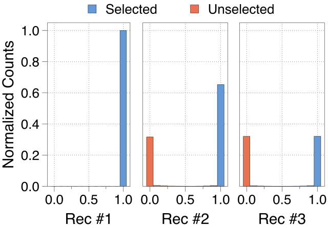
对 token 选择，衡量均衡的指标是 MaxVio（越低越均衡）。结果呈现出明显的取舍：均衡损失系数取 0.1 时 MaxVio 低到 0.200，但 NLL 是 3.0239；系数取 0.01 时 MaxVio 升到 0.682，NLL 却降到 2.9118；不用损失、只调偏置时 MaxVio 0.852、NLL 2.9081。也就是说，越强行拉平负载，模型越差。作者最终选择显式的均衡损失，理由是路由更稳定；但即便如此，模型在将近一半的训练步里都没能达到均衡。作者把原因归结为这些“专家”本身就不对称（不同深度的计算量不同），而专家选择不存在这个问题，这也是第 5 节里 token 选择大幅落后的原因之一。
8.3 KV 策略：共享在普通模型里没坏处，在 MoR 里有得有失
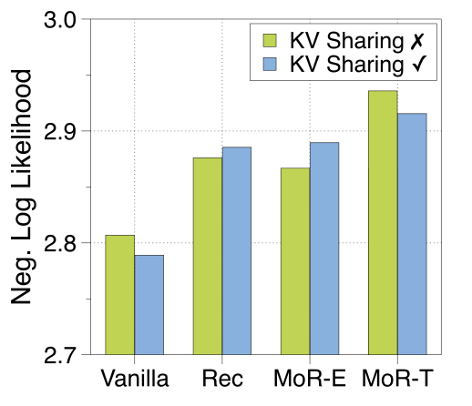
附录表 15 的数字：普通模型（30 层）共享后 NLL 从 2.8069 降到约 2.79（按 Sequence 或 Cycle 方式共享分别是 2.7879 和 2.7890），作者认为共享起到了正则化的作用；Middle-Cycle 的 Recursive 从 2.8760 升到 2.8854；专家选择 MoR 从 2.8667 升到 2.8895，退化最明显；token 选择 MoR 从 2.9358 降到 2.9155，反而受益。作者的解释是：专家选择的路由很精确，让每一轮只和本轮的同伴交流更有利；token 选择的路由不太准，共享的 KV 让每个 token 都能看到完整上文，正好弥补了路由的失误。
为什么在参数共享的模型里，KV 共享也只带来很小的损失？作者把每一层的 key 和 value 拆成大小和方向两部分来看，发现共享同一套参数的层（相隔 10 层）产生的 key 和 value 在大小上呈现明显的周期性，在方向上也高度相似：
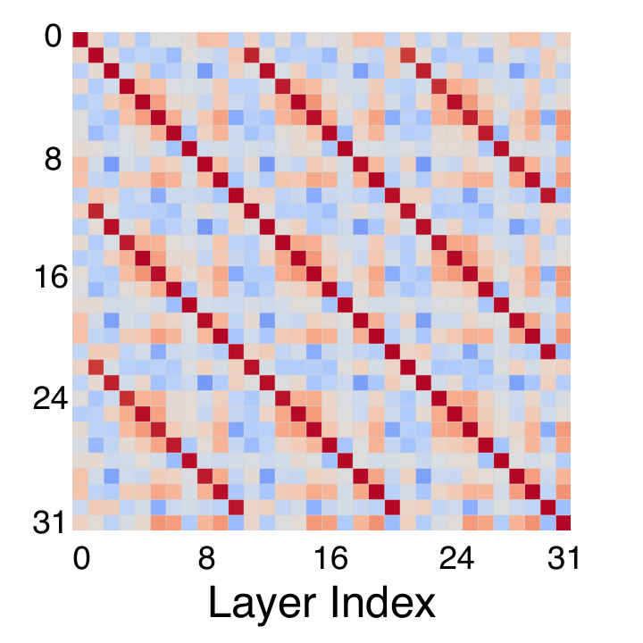
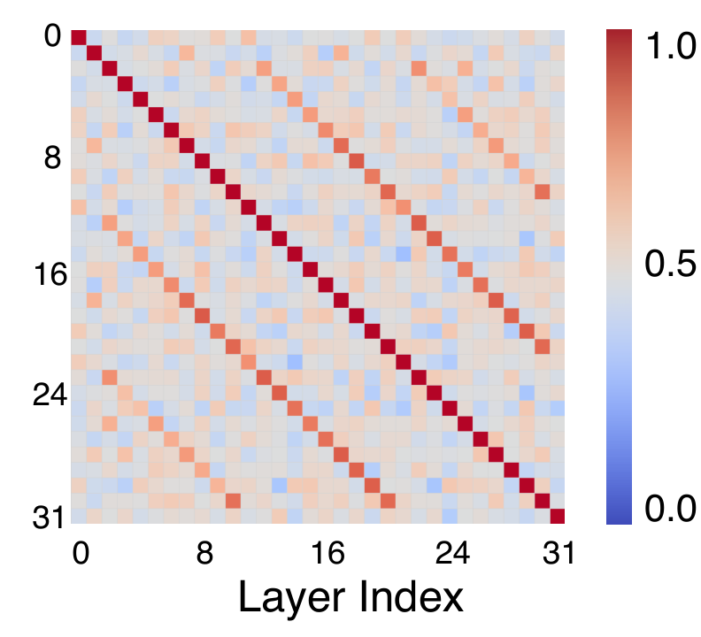
作者还尝试用 LoRA、DoRA、提示前缀等方式“放松”共享约束（附录表 16），从零训练时都没有带来明显提升，和 RRT 里“放松”有效的结论不同——RRT 是从已训练好的模型改造，LoRA 有原权重可以逼近。
9 分析：计算最优的走向、路由学到了什么、测试时扩展
9.1 计算最优：MoR 更偏向“大模型、短训练”
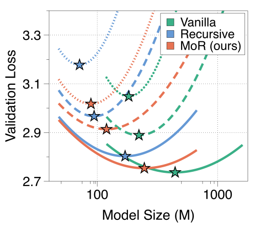
论文的结论是：连接 MoR 各个星号的“最优路径”斜率更平，说明 MoR 从增加参数中获益更多、对数据没那么饥渴；作者推测这是因为共享块本身的质量变得比多喂数据更重要，所以扩大 MoR 时应该偏向更大的模型、更短的训练。
9.2 路由学到了什么
原文图 1 右和附录表 17 展示了每个 token 被分配的递归次数（360M 档、\(N_r=3\)、训练 30B token 的模型）。作者观察到，深度反映的是下一个 token 在上下文中有多好猜：一个词被切成几个子词时，后半部分往往很容易猜，所以前一个子词的位置只需要很少的递归；而像破折号、括号、句号、逗号这类功能性符号，“打开”它们似乎很容易，但猜出它们的“闭合”部分或者紧跟其后的第一个 token 可能更难。图 5（b）已经说明，用了辅助损失的专家选择路由器能把选中和未选中的 token 完全分开。
9.3 测试时扩展：只在训练过的深度以内
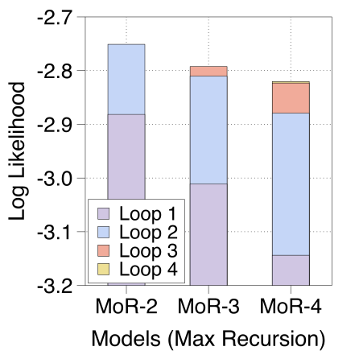
论文据此认为，更深的递归不仅提供了更多计算，而且每一轮都在自己的深度上专门化地精炼 token 的表示，所以 MoR 支持测试时扩展：推理时允许更多的递归轮数可以提高生成质量。
10 相关工作、结论与局限
论文把相关工作分成五类。递归 Transformer：Universal Transformer 表明反复使用一个块可以达到不共享深层模型的表达能力；循环 Transformer 被证明可以充当可编程计算机（见本站精读）、学习迭代式的拟合算法、在算法任务上外推到更长的输入；RRT 用 LoRA 缓解共享带来的损失；Huginn 等工作展示了循环深度上的潜空间推理。自适应计算：早退出（CALM 等）和 MoD 把“算不算这一层”交给路由器决定；MoR 把这个思路搬到共享权重的递归结构上，参数量不变，计算深度可以超出模型的物理层数。路由机制：MoE 的 token 选择和专家选择。KV 缓存：量化、丢弃不重要的条目、多查询/分组查询注意力，以及相邻层共享 KV 的 CLA；MoR 的递归共享提供了另一条路，而且可以只在 prefill 时跑第一轮。潜空间推理：暂停 token、填充符号、把隐藏状态循环喂回去模拟思维链（如 Reasoning with Latent Thoughts）等；作者认为它们大多采用固定的推理深度，不能按需分配，这正是循环与自适应深度结合的动机。
作者在 §7.1 列出的局限和未来方向：
- 推理模型。在真实的推理数据上做后训练，让路由器学会按推理的复杂度调整深度。
- 继续扩大。受算力所限只做到 1.7B；下一步想做 3B 以上、更多数据。可能的办法包括加大不共享的部分、给每个深度加专属的 LoRA 或专家，以及从现成的普通模型继续训练（uptraining）。
- 自适应的容量控制。专家选择的容量在训练时固定，而辅助损失让路由分数几乎非 0 即 1，训练后很难改变各轮的 top-\(k\)。需要能在训练和推理时使用不同容量的设计。
- 与稀疏方法结合。剪枝、量化、结构化稀疏等都被认为和 MoR 互补。
- 多模态。递归块与模态无关，可以用于视觉、语音和长视频、长音频流。
论文的结论可以这样概括：MoR 在一个结构里同时利用了参数共享、自适应递归深度和高效的 KV 缓存；在 135M 到 1.7B 的规模上，它在同训练 FLOPs 下以更少的参数取得了相近或略好的验证损失和 few-shot 准确率，并带来更高的推理吞吐。结合第 6、7 节的分析，“相近”比“更好”更能概括这些数字。
后来怎么样了
MoR 于 2025 年 7 月挂上 arXiv，被 NeurIPS 2025 接收为 poster。它的直接影响主要在两个方向：把“按 token 路由递归深度”搬到别的模态和领域，以及循环 Transformer 这一整条线对“算力是否对齐”的反思。下面只列本站核实过的后续工作。
- Vision-MoR（He 等，AAAI 2026，DOI ↗）：把 MoR 搬到视觉 Transformer，在图块（patch）级别分配递归深度，路由器用带移位窗口注意力的“空间感知”设计。作者报告 Small 版本在 ImageNet-1K 上以 5.7M 参数、140M FLOPs 达到 74.6% 的 top-1，X-Large 版本 80.4%，在 COCO 检测上 39.1 AP。
- Soft Mixture-of-Recursions（Lee 与 Park，arXiv 2607.00774 ↗，2026-07）：认为在视觉 Transformer 里单纯加深递归并不可靠，因为中间轮次的表示被浪费了。它不再“硬”选深度，而是为每个 token 学一组权重，把所有轮次的输出软性地混合起来（SR-ViT）。作者报告 SR-ViT-S 的递归深度从 1 加到 4 时，ImageNet-1K top-1 从 79.83% 升到 82.48%，只多 1.7M 参数。
- bioMoR（Howlader 等，arXiv 2608.06727 ↗，2026-08）：把 MoR 用于基因和通路级别的组学数据，在三个位置加入生物学知识：用图结构细化 token 嵌入、给注意力加结构偏置、让路由器参考图上的邻居来决定递归深度。作者报告在 8 个基准上比最强的不含生物知识的 MoR 基线 macro-F1 高 8.2 个百分点，参数比不递归的 Transformer 少 75%，FLOPs 最多少 58%。
在本站这一批循环 Transformer 的精读里，可以接着读这些和 MoR 直接相关的工作：
- Ouro / LoopLM：同样让循环语言模型在预训练中自己学会分配深度（用带熵正则的训练目标），但训练数据多得多（7.7T token）；读的时候注意它的基座模型在预训练阶段就见过 SFT 类数据，和其他基座模型的比较受数据影响。
- Iso-Depth 扩展律与 循环能替代多少参数：在严格对齐训练算力的条件下，量化“多循环一次”值多少个独立的块。
- SMELT：在 MoE 中做循环，同时对齐每 token FLOPs、总参数和 KV 缓存。
- Parcae 和 One Model, Many Depths（ELR）：分别从训练稳定性和“一个检查点支持多种循环圈数”的角度继续这条线；后者关心的“同一个模型在推理时换用不同深度”，正是 MoR 在局限里提到、却没有解决的问题。
官方仓库截至 2026-10-19 有 642 个 star、100 个 fork，仍只包含训练代码和 360M 档的检查点；推理与连续深度批处理的代码没有公开，Hugging Face 的整合也尚未完成。
作者
单位按论文署名。背景只列可公开查证的信息：作者主页、实验室与机构页面、论文署名。论文脚注说明：Google 的合作者只起顾问作用，基于 Llama 结构的实验没有 Google 顾问的指导或参与。
影响力
- 引用：见页首（Semantic Scholar 快照）。
- 发表：NeurIPS 2025（poster）。arXiv v1 2025-07-14，v3 2025-10-25（本页依据 v3）。
- 开源：raymin0223/mixture_of_recursions，Apache-2.0，642 star、100 fork（截至 2026-10-19）；包含训练与评测代码、360M 档 Vanilla / Recursive / MoR 检查点（Google Drive），不含推理与连续深度批处理代码。
- 后续采用：已有把 MoR 用于视觉（Vision-MoR，AAAI 2026；Soft MoR）和组学数据（bioMoR）的工作，见“后来怎么样了”。截至 2026-10-19，本站没有查到对其语言模型主结果的独立复现。
延伸阅读
- 相关精读：ALoDLM
- 本系列（循环 Transformer）：Universal Transformers · Looped Transformers as Programmable Computers · Reasoning with Latent Thoughts · Huginn · Ouro · TRM · Parcae · Iso-Depth · SMELT · Loop-μP · ELR · 循环能替代多少参数 · ARLoop
- 背景：vLLM / PagedAttention（KV 缓存与连续批处理）· DeepSeek-V3（MoE 路由与无辅助损失均衡）· FlashAttention（注意力的计算与访存代价）
- 前作原文：Relaxed Recursive Transformers（arXiv 2410.20672）↗ · Mixture-of-Depths：arXiv 2404.02258 ↗
- 返回论文书架
原文：Sangmin Bae, Yujin Kim, Reza Bayat, Sungnyun Kim, Jiyoun Ha, Tal Schuster, Adam Fisch, Hrayr Harutyunyan, Ziwei Ji, Aaron Courville, Se-Young Yun. Mixture-of-Recursions: Learning Dynamic Recursive Depths for Adaptive Token-Level Computation. NeurIPS 2025. arXiv:2507.10524（v3，2025-10-25），以 CC BY 4.0 许可发布。本页标注为“原文图”的图片取自 arXiv HTML 版原文，未做修改；其余示意图与正文均为本站撰写和绘制，并非翻译。数字与结论以原文为准，标“推算”的为本站计算；关于代码与评测路径的说明来自官方仓库（Apache-2.0）及其 GitHub issue 中维护者的回复。